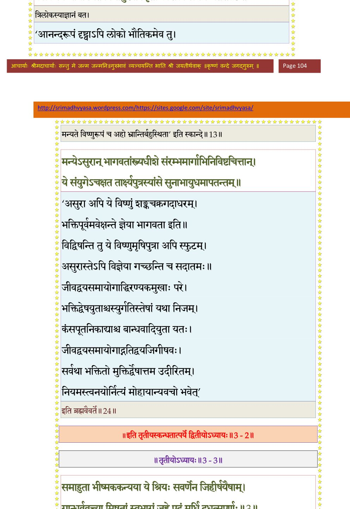

स्कन्ध 3 · अध्याय 2
श्लोक १
शुक उवाच–
इति भागवतः पृष्टः क्षत्त्रा वार्तां प््रिायाश्रयाम् ।
प््रातिवक्तुं न चोत्सेहे औत्कण्ठ्यात् स्मारितेश्वरः।। १ ।।
इति भागवतः पृष्टः क्षत्त्रा वार्तां प््रिायाश्रयाम् ।
प््रातिवक्तुं न चोत्सेहे औत्कण्ठ्यात् स्मारितेश्वरः।। १ ।।
श्लोक २
यः पञ्चहायनो मात्रा प््र•तराशाय याचितः ।
नैच्छत् तद् रचयन् यस्य सपर्यां बाललीलया।। २ ।।
नैच्छत् तद् रचयन् यस्य सपर्यां बाललीलया।। २ ।।
श्लोक ३
स कथं सेवया तस्य कालेन जरसं गतः ।
पृष्टो वार्तां प््रातिब्रूयाद् भर्तुः पादावनुस्मरन्।। ३ ।।
पृष्टो वार्तां प््रातिब्रूयाद् भर्तुः पादावनुस्मरन्।। ३ ।।
श्लोक ४
स मुहूर्तमभूत् तूष्णीं कृष्णांघ्रिसुधया भृशम् ।
तीव्रेण भक्तियोगेन निमग्नः साधु निर्वृतः।। ४ ।।
तीव्रेण भक्तियोगेन निमग्नः साधु निर्वृतः।। ४ ।।
श्लोक ५
पुलकोद्भिन्नसर्वाङ्गो मुञ्चन् मीलद्दृशाऽश्रु सः ।
पूर्णार्थो लक्षितस्तेन स्नेहप््रासरसंप्लुतः।। ५ ।।
पूर्णार्थो लक्षितस्तेन स्नेहप््रासरसंप्लुतः।। ५ ।।
श्लोक ६
शनकैर्भगवल्लोकान्नृलोकं पुनरागतः ।
विमृज्य नेत्रे विदुरं प््रात्याहोद्धव उत्स्मयन्।। ६ ।।
विमृज्य नेत्रे विदुरं प््रात्याहोद्धव उत्स्मयन्।। ६ ।।
श्लोक ७
उद्धव उवाच–
कृष्णद्युमणिनिम्लोचे गीर्णेष्वजगरेण ह ।
किं नु नः कुशलं ब्रूयां गतश्रीषु यदुष्वहम्।। ७ ।।
कृष्णद्युमणिनिम्लोचे गीर्णेष्वजगरेण ह ।
किं नु नः कुशलं ब्रूयां गतश्रीषु यदुष्वहम्।। ७ ।।
श्लोक ८
दुर्भगो बत लोकोऽयं यदवो नितरामपि ।
ये संवसन्तो न विदुर्हरिं मीना यथाऽम्भसि१।। ८ ।।
ये संवसन्तो न विदुर्हरिं मीना यथाऽम्भसि१।। ८ ।।
श्लोक ९
इङ्गितज्ञाः २पुरुप््र•ैढा एकारामाश्च सात्वताः ।
सात्वतामृषभं सर्वे भूतावासममंसत।। ९ ।।
सात्वतामृषभं सर्वे भूतावासममंसत।। ९ ।।
श्लोक १०
देवस्य मायया स्पृष्टा ये चान्ये असदाश्रयाः ।
भ्राम्यते धीर्नतद्वाक्यैरात्मन्युप्तात्मनां हरौ१।। १० ।।
भ्राम्यते धीर्नतद्वाक्यैरात्मन्युप्तात्मनां हरौ१।। १० ।।
श्लोक ११
प््रादर्श्यातप्ततपसामवितृप्तदृशां नृणाम् ।
आदायान्तरधाद् यस्तु स्वबिम्बं लोकलोचनम्।। ११ ।।
आदायान्तरधाद् यस्तु स्वबिम्बं लोकलोचनम्।। ११ ।।
श्लोक १२
यन्मर्त्यलीलौपयिकं स्वयोगमायाबलं दर्शयता गृहीतम् ।
विस्मापनं स्वस्य च सौभगर्द्धेः परं पदं भूषणभूषणाङ्गम्।। १२ ।।
विस्मापनं स्वस्य च सौभगर्द्धेः परं पदं भूषणभूषणाङ्गम्।। १२ ।।
श्लोक १४
यद्धर्मसूनोर्बत राजसूये निरीक्ष्य दृक्स्वस्त्ययनं त्रिलोकः ।
कार्त्स्न्येन चात्रोपगतं विधातुरर्वाक् सृतौ कौशलमित्यमन्यत।। १३
यस्यानुरागप्लुतहासरासलीलावलोकप््रातिलब्धमानाः ।
व्रजस्त्रियो दृग्भिरनुप््रावृत्तधियोऽवतस्थुः किल कृत्यशेषाः।। १४ ।।
कार्त्स्न्येन चात्रोपगतं विधातुरर्वाक् सृतौ कौशलमित्यमन्यत।। १३
यस्यानुरागप्लुतहासरासलीलावलोकप््रातिलब्धमानाः ।
व्रजस्त्रियो दृग्भिरनुप््रावृत्तधियोऽवतस्थुः किल कृत्यशेषाः।। १४ ।।
भागवततात्पर्यनिर्णय

श्लोक १५
स्वशान्तरूपेष्वितरैश्च रूपैरभ्यर्द्यमानेष्वनुकम्पितात्मा ।
परावरेशो महदंशयुक्तो ह्यजोऽपि जातो भगवान् यथाऽग्निः।। १५ ।।
परावरेशो महदंशयुक्तो ह्यजोऽपि जातो भगवान् यथाऽग्निः।। १५ ।।
श्लोक १७
मां खेदयत्येतदजस्य जन्मविडम्बनं यद्वसुदेवगेहे ।
व्रजे च वासोऽरिभयादिव स्वयं पुराद् व्यवात्सीद् यदनन्तवीर्यः।।१६
दुनोति चेतः स्मरतो ममैतद् यदाह पादावभिवन्द्य पित्रोः ।
ताताम्ब कंसादुरुकम्पितानां प््रासीदतं नोऽकृतनिष्कृतीनाम्।। १७ ।।
व्रजे च वासोऽरिभयादिव स्वयं पुराद् व्यवात्सीद् यदनन्तवीर्यः।।१६
दुनोति चेतः स्मरतो ममैतद् यदाह पादावभिवन्द्य पित्रोः ।
ताताम्ब कंसादुरुकम्पितानां प््रासीदतं नोऽकृतनिष्कृतीनाम्।। १७ ।।
श्लोक १८
को वा अमुष्याङ्घ्रिसरोजरेणुं विस्मर्तुमीशेत पुमान् विजिघ्रन् ।
यो विस्फुरद्भ्रूविटपेन भूमेर्भारं कृतान्तेन तिरश्चकार।। १८ ।।
यो विस्फुरद्भ्रूविटपेन भूमेर्भारं कृतान्तेन तिरश्चकार।। १८ ।।
श्लोक १९
दृष्टा भवद्भिर्ननु राजसूये चैद्यस्य कृष्णं द्विषतोऽपि सिद्धिः ।
यां योगिनः संस्पृहयन्ति सम्यग्योगेन कस्तद्विरहं सहेत।। १९ ।।
यां योगिनः संस्पृहयन्ति सम्यग्योगेन कस्तद्विरहं सहेत।। १९ ।।
श्लोक २०
तथैव चान्ये नरलोकवीरा य आहवे कृष्णमुखारविन्दम् ।
नेत्रैः पिबन्तो नयनाभिरामं पार्थास्त्रपूताः पदमापुरस्य।। २० ।।
नेत्रैः पिबन्तो नयनाभिरामं पार्थास्त्रपूताः पदमापुरस्य।। २० ।।
श्लोक २१
स्वयं त्वसाम्यातिशयस्त्र्यधीशः स्वराज्यलक्ष्म्याप्तसमस्तकामः ।
बलिं हरद्भिः सुरलोकपालैः किरीटकोट्येडितपादपीठः।। २१ ।।
बलिं हरद्भिः सुरलोकपालैः किरीटकोट्येडितपादपीठः।। २१ ।।
श्लोक २२
तत्तस्य कैङ्कर्यमलं भृतान्नो विग्लापयत्यङ्ग यदुग्रसेनम् ।
तिष्ठन् निषण्णं परमेष्ठिधिष्ण्ये न्यबोधयद् देव निधारयेति।। २२ ।।
तिष्ठन् निषण्णं परमेष्ठिधिष्ण्ये न्यबोधयद् देव निधारयेति।। २२ ।।
श्लोक २४
अहो बकीयं स्तनकालकूटं जिघांसयाऽपाययदप्यसाध्वी ।
लेभे गतिं धात्र्युचितां ततोऽन्यं कं वा दयालुं शरणं व्रजेम।। २३
मन्येऽसुरान् भागवतांस्त्र्यधीशे संरम्भमार्गाभिनिविष्ठचित्तान् ।
ये संयुगेऽचक्षत तार्क्षपुत्रस्यांसे सुनाभायुधमापतन्तम्।। २४ ।।
लेभे गतिं धात्र्युचितां ततोऽन्यं कं वा दयालुं शरणं व्रजेम।। २३
मन्येऽसुरान् भागवतांस्त्र्यधीशे संरम्भमार्गाभिनिविष्ठचित्तान् ।
ये संयुगेऽचक्षत तार्क्षपुत्रस्यांसे सुनाभायुधमापतन्तम्।। २४ ।।
श्लोक २५
वसुदेवस्य देवक्यां जातो भोजेन्द्रबन्धने ।
चिकीर्षुर्भगवांच्छर्म अब्जजेनाभियाचितः।। २५ ।।
चिकीर्षुर्भगवांच्छर्म अब्जजेनाभियाचितः।। २५ ।।
श्लोक २६
ततो नन्दव्रजमितः पित्रा कंसाद् विबिभ्यता ।
एकादशसमस्तत्र गूढार्चिः सबलोऽवसत्।। २६ ।।
एकादशसमस्तत्र गूढार्चिः सबलोऽवसत्।। २६ ।।
श्लोक २७
परीतो वत्सपैर्वत्सांश्चारयन् व्यहरद्धरिः ।
यमुनोपवने कूजद्द्विजसंकुलिताङ्घ्रिपे।। २७ ।।
यमुनोपवने कूजद्द्विजसंकुलिताङ्घ्रिपे।। २७ ।।
श्लोक २८
कौमारा दर्शयंश्चेष्टाः प््रोक्षणीया व्रजौकसाम् ।
रुदन्निव हसन् मुग्धबालसिंहावलोकनः।। २८ ।।
रुदन्निव हसन् मुग्धबालसिंहावलोकनः।। २८ ।।
श्लोक २९
स एव गोकुलं लक्ष्म्या निकेतं सितगोवृषम् ।
चारयन्ननुगान् गोपान् रणद्वेणुररीरमत्।। २९ ।।
चारयन्ननुगान् गोपान् रणद्वेणुररीरमत्।। २९ ।।
श्लोक ३०
प््रायुक्तान् भोजराजेन मायिनः कामरूपिणः ।
लीलया व्यनुदत् तांस्तान् बालः क्रीडनकानिव।। ३० ।।
लीलया व्यनुदत् तांस्तान् बालः क्रीडनकानिव।। ३० ।।
श्लोक ३१
विपन्नान् विषपानेन निगृह्य भुजगाधिपम् ।
उत्थाप्यापाययद् गावस्तत्तोयं प््राकृतिस्थितम्।। ३१ ।।
उत्थाप्यापाययद् गावस्तत्तोयं प््राकृतिस्थितम्।। ३१ ।।
श्लोक ३२
अयाजयद् गोसवेन गोपराजं द्विजोत्तमैः ।
वित्तस्य चोरुभारस्य चिकीर्षन् सद्व्ययं विभुः।। ३२ ।।
वित्तस्य चोरुभारस्य चिकीर्षन् सद्व्ययं विभुः।। ३२ ।।
श्लोक ३३
वर्षतीन्द्रे व्रजः कोपाद् भग्नमानेऽतिविह्वले ।
गोत्रलीलातपत्रेण त्रातो भद्रानुगृह्णता।। ३३ ।।
गोत्रलीलातपत्रेण त्रातो भद्रानुगृह्णता।। ३३ ।।
श्लोक ३४
शरच्छशिकरैर्मृष्टं मानयन् रजनीमुखम् ।
गायन् कलपदं रेमे स्त्रीणां मण्डलमण्डनः।। ३४ ।।
गायन् कलपदं रेमे स्त्रीणां मण्डलमण्डनः।। ३४ ।।
।। इति श्रीमद्भागवते तृतीयस्कन्धे द्वितीयोऽध्यायः ।।